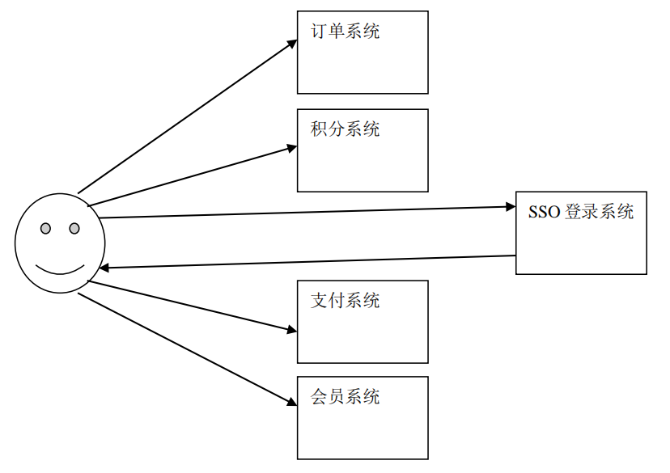
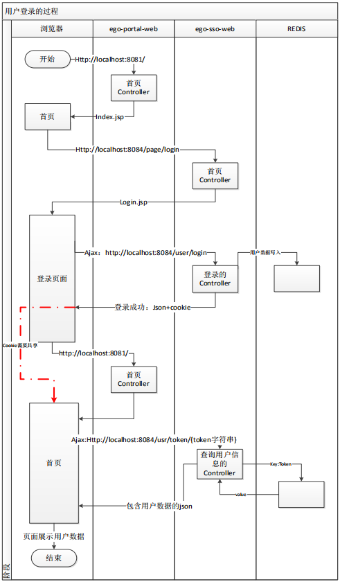

原文出处:本文由博客园博主soldier_cnblogs提供。
原文连接:https://www.cnblogs.com/HuangJie-sol/p/11921376.html
原文连接:https://www.cnblogs.com/HuangJie-sol/p/11921376.html
单点登录系统介绍
单点登录（Single Sign On），简称为 SSO，是目前比较流行的企业业务整合的解决方案之一。SSO 的定义是在多个应用系统中，用户只需要登录一次就可以访问所有相互信任的应用系统。

单点登录的实现原理
实现单点登录，就是解决如何产生和存储那个信任，再就是其他系统如何验证这个信任的有效性。因此，也就需要解决以下两点：
- 存储信任
- 验证信任

项目配置文件（SSM+Redis+Dubbo）


<?xml version="1.0" encoding="UTF-8"?>
<beans xmlns="http://www.springframework.org/schema/beans"
xmlns:dubbo="http://code.alibabatech.com/schema/dubbo"
xmlns:xsi="http://www.w3.org/2001/XMLSchema-instance"
xsi:schemaLocation="http://www.springframework.org/schema/beans
http://www.springframework.org/schema/beans/spring-beans.xsd
http://code.alibabatech.com/schema/dubbo
http://code.alibabatech.com/schema/dubbo/dubbo.xsd">
<!-- 添加服务消费者的标志 -->
<dubbo:application name="ego-sso-web-consumer"/>
<!-- 指定注册中心，有两个地址192.168.1.171、172.18.25.171 -->
<dubbo:registry address="172.18.25.171:2181,172.18.25.171:2182,172.18.25.171:2183" protocol="zookeeper" />
<!--<dubbo:registry address="192.168.1.171:2181,192.168.1.171:2182,192.168.1.171:2183" protocol="zookeeper" />-->
<!-- spring容器中存在一个远程服务的代理对象 -->
<dubbo:reference interface="com.soldier.ego.rpc.service.UserService" id="userServiceProxy"></dubbo:reference>
</beans><?xml version="1.0" encoding="UTF-8"?>
<beans xmlns="http://www.springframework.org/schema/beans"
xmlns:context="http://www.springframework.org/schema/context"
xmlns:xsi="http://www.w3.org/2001/XMLSchema-instance"
xsi:schemaLocation="http://www.springframework.org/schema/beans
http://www.springframework.org/schema/beans/spring-beans.xsd
http://www.springframework.org/schema/context
http://www.springframework.org/schema/context/spring-context.xsd">
<!-- 加载cache.properties-->
<!--<context:property-placeholder location="classpath:cache.properties"></context:property-placeholder>-->
<!-- 实例化JedisCluster，连接redis集群，有两个地址192.168.1.174、172.18.25.174-->
<bean id="jedisCluster" class="redis.clients.jedis.JedisCluster">
<constructor-arg name="nodes">
<set>
<bean class="redis.clients.jedis.HostAndPort">
<constructor-arg name="host" value="172.18.25.174"></constructor-arg>
<constructor-arg name="port" value="6380"></constructor-arg>
</bean>
<bean class="redis.clients.jedis.HostAndPort">
<constructor-arg name="host" value="172.18.25.174"></constructor-arg>
<constructor-arg name="port" value="6381"></constructor-arg>
</bean>
<bean class="redis.clients.jedis.HostAndPort">
<constructor-arg name="host" value="172.18.25.174"></constructor-arg>
<constructor-arg name="port" value="6382"></constructor-arg>
</bean>
<bean class="redis.clients.jedis.HostAndPort">
<constructor-arg name="host" value="172.18.25.174"></constructor-arg>
<constructor-arg name="port" value="6383"></constructor-arg>
</bean>
<bean class="redis.clients.jedis.HostAndPort">
<constructor-arg name="host" value="172.18.25.174"></constructor-arg>
<constructor-arg name="port" value="6384"></constructor-arg>
</bean>
<bean class="redis.clients.jedis.HostAndPort">
<constructor-arg name="host" value="172.18.25.174"></constructor-arg>
<constructor-arg name="port" value="6385"></constructor-arg>
</bean>
</set>
</constructor-arg>
</bean>
</beans><?xml version="1.0" encoding="UTF-8"?>
<beans xmlns="http://www.springframework.org/schema/beans"
xmlns:context="http://www.springframework.org/schema/context"
xmlns:xsi="http://www.w3.org/2001/XMLSchema-instance"
xsi:schemaLocation="http://www.springframework.org/schema/beans
http://www.springframework.org/schema/beans/spring-beans.xsd
http://www.springframework.org/schema/context
http://www.springframework.org/schema/context/spring-context.xsd">
<context:component-scan base-package="com.soldier.ego.sso.service.impl" />
</beans><?xml version="1.0" encoding="UTF-8"?>
<beans xmlns="http://www.springframework.org/schema/beans"
xmlns:context="http://www.springframework.org/schema/context"
xmlns:mvc="http://www.springframework.org/schema/mvc"
xmlns:xsi="http://www.w3.org/2001/XMLSchema-instance"
xsi:schemaLocation="http://www.springframework.org/schema/beans
http://www.springframework.org/schema/beans/spring-beans.xsd
http://www.springframework.org/schema/context
http://www.springframework.org/schema/context/spring-context.xsd
http://www.springframework.org/schema/mvc
http://www.springframework.org/schema/mvc/spring-mvc.xsd">
<!-- 扫描controller -->
<context:component-scan base-package="com.soldier.ego.sso.controller" />
<!-- mvc:annotation-driven -->
<mvc:annotation-driven />
<!-- 静态资源映射 -->
<!-- location:表示资源在项目的真正位置 -->
<!-- mapping:访问路径 -->
<!-- /css/** -->
<!-- http://localhost:8080/css/a/b/c/hello.css -->
<!-- / = http://localhost:8080/ -->
<mvc:resources location="/css/" mapping="/css/**"></mvc:resources>
<mvc:resources location="/js/" mapping="/js/**"></mvc:resources>
<mvc:resources location="/images/" mapping="/images/**"></mvc:resources>
<!-- 视图解析器 -->
<bean id="viewResovler"
class="org.springframework.web.servlet.view.InternalResourceViewResolver">
<!-- 表示使用的视图技术是jsp -->
<property name="viewClass"
value="org.springframework.web.servlet.view.JstlView"></property>
<!-- 前缀 -->
<property name="prefix" value="/WEB-INF/jsp/"></property>
<!-- 后缀 -->
<property name="suffix" value=".jsp"></property>
</bean>
</beans><?xml version="1.0" encoding="UTF-8"?>
<web-app xmlns:xsi="http://www.w3.org/2001/XMLSchema-instance"
xmlns="http://java.sun.com/xml/ns/javaee"
xsi:schemaLocation="http://java.sun.com/xml/ns/javaee http://java.sun.com/xml/ns/javaee/web-app_2_5.xsd"
version="2.5">
<display-name>ego-sso-web</display-name>
<welcome-file-list>
<welcome-file>index.html</welcome-file>
<welcome-file>index.htm</welcome-file>
<welcome-file>index.jsp</welcome-file>
<welcome-file>default.html</welcome-file>
<welcome-file>default.htm</welcome-file>
<welcome-file>default.jsp</welcome-file>
</welcome-file-list>
<!--<servlet-mapping>-->
<!--<servlet-name>default</servlet-name>-->
<!--<url-pattern>/favicon.ico</url-pattern>-->
<!--</servlet-mapping>-->
<!-- 以监听器的方式启动spring容器 -->
<listener>
<listener-class>org.springframework.web.context.ContextLoaderListener</listener-class>
</listener>
<!-- 指定spring的配置文件 -->
<context-param>
<param-name>contextConfigLocation</param-name>
<param-value>classpath:spring/applicationContext-*.xml</param-value>
</context-param>
<!-- POST请求的乱码过滤器 -->
<filter>
<filter-name>encodingFilter</filter-name>
<filter-class>org.springframework.web.filter.CharacterEncodingFilter</filter-class>
<!-- 指定编码方式 -->
<init-param>
<param-name>encoding</param-name>
<param-value>utf-8</param-value>
</init-param>
</filter>
<!-- 映射filter -->
<filter-mapping>
<filter-name>encodingFilter</filter-name>
<url-pattern>/*</url-pattern>
</filter-mapping>
<!-- springmvc的servlet -->
<servlet>
<servlet-name>ego-sso-web</servlet-name>
<servlet-class>org.springframework.web.servlet.DispatcherServlet</servlet-class>
<!-- 指定springmvc的配置文件 -->
<init-param>
<param-name>contextConfigLocation</param-name>
<param-value>classpath:spring/springmvc.xml</param-value>
</init-param>
<!-- 让springmvc随系统启动而启动 -->
<load-on-startup>1</load-on-startup>
</servlet>
<servlet-mapping>
<servlet-name>ego-sso-web</servlet-name>
<!-- 不需要伪静态化-->
<url-pattern>/</url-pattern>
</servlet-mapping>
</web-app>
public class EgoResult implements Serializable {
//响应状态
private Integer status;
//响应数据
private Object data;
//响应消息
private String msg;
public Integer getStatus() {
return status;
}
public void setStatus(Integer status) {
this.status = status;
}
public Object getData() {
return data;
}
public void setData(Object data) {
this.data = data;
}
public String getMsg() {
return msg;
}
public void setMsg(String msg) {
this.msg = msg;
}
public EgoResult(Integer status, Object data, String msg) {
this.status = status;
this.data = data;
this.msg = msg;
}
public EgoResult(Integer status, String msg) {
this.status = status;
this.msg = msg;
}
public EgoResult(Object data) {
this.data = data;
this.status = 200;
this.msg = "ok";
}
public EgoResult() {
super();
}
/**
* 静态方法，返回rgoResult对象
*/
public static EgoResult ok() {
return new EgoResult(null);
}
}
实现用户名唯一性验证
1、唯一性验证接口开发规范
| 请求方法 | GET |
| UR | http://sso.egou.com/user/check/{param}/{type} |
| 参数说 | 格式如：zhangsan/1，其中 zhangsan 是校验的数据，type 为类型，可 选参数 1、2、3 分别代表 username、phone、email 可选参数 callback：如果有此参数表示此方法为 jsonp 请求，需要支 持 jsonp。 |
| 示例 | http://sso.egou.com/user/check/zhangsan/1 |
| 返回 | { status: 200 //200 成功 msg: "OK"// 返回信息消息 data: false // 返回数据，true：数据可用，false：数据不可用 } |
2、实现
/**
* 处理用户名唯一性验证请求
* @param param 验证数据
* @param type 验证类型
* @param callback 回到函数
* MappingJacksonValue --> 返回json，支持JSONP（其实是解决JS跨域调用数据的一种方案）
* required = false --> 非必须
* @ResponseBody 异步的，不会进行跳转
*/
@RequestMapping("/user/check/{param}/{type}")
@ResponseBody
public MappingJacksonValue loadPage(@PathVariable String param, @PathVariable Integer type,
@RequestParam(required = false) String callback) {
EgoResult result = ssoUserService.selectUserByCond(param, type);
// 处理json响应数据格式
MappingJacksonValue jacksonValue = new MappingJacksonValue(result);
if (!StringUtils.isEmpty(callback)) jacksonValue.setJsonpFunction(callback);
return jacksonValue;
}@Service
public class SsoUserServiceImpl implements SsoUserService {
//注入的是远程服务的代理对象
@Autowired
private UserService userServiceProxy;
@Override
public EgoResult selectUserByCond(String cond, Integer type) {
return userServiceProxy.selectUserByCondService(cond, type);
}
}@Service
public class UserServiceImpl implements UserService {
@Autowired
private TbUserMapper tbUserMapper;
@Override
public EgoResult selectUserByCondService(String cond, Integer type) {
//动态产生where条件
TbUserExample example = new TbUserExample();
TbUserExample.Criteria criteria = example.createCriteria();
//封装查询条件
if (type.equals(1)) {
criteria.andUsernameEqualTo(cond);
} else if (type.equals(2)) {
criteria.andPhoneEqualTo(cond);
} else if (type.equals(3)) {
criteria.andEmailEqualTo(cond);
}
List<TbUser> userList = tbUserMapper.selectByExample(example);
// 创建EgoResult对象
EgoResult result = new EgoResult();
result.setStatus(200);
result.setMsg("ok");
if (userList!=null && userList.size()>0) result.setData(false);
else result.setData(true); // 用户名可用
return result;
}
}
实现用户注册
1、用户注册接口开发规范
| 请求方法 | POST |
| URL | http://sso.egou.com/user/register |
| 参数说明 | username //用户名 password //密码 phone //手机号 email //邮箱 |
| 示例 | http://sso.egou.com/user/register |
| 返回值 | { status: 400 msg: "注册失败. 请校验数据后请再提交数据." data: null } |
2、实现
/**
* 实现用户注册
* @param user 用户信息
* @ResponseBody 异步的，不会进行跳转
*/
@RequestMapping(value = "/user/register", method = RequestMethod.POST)
@ResponseBody
public EgoResult insertUser(TbUser user) {
return ssoUserService.insertUserService(user);
}@Service
public class SsoUserServiceImpl implements SsoUserService {
//注入的是远程服务的代理对象
@Autowired
private UserService userServiceProxy;
@Override
public EgoResult insertUserService(TbUser user) {
// md5加密
String pwd = user.getPassword();
String md5 = DigestUtils.md5DigestAsHex(pwd.getBytes());
user.setPassword(md5);
return userServiceProxy.insertUserService(user);
}
}@Service
public class UserServiceImpl implements UserService {
@Autowired
private TbUserMapper tbUserMapper;
@Override
public EgoResult insertUserService(TbUser user) {
EgoResult result = new EgoResult();
try {
Date date = new Date();
user.setCreated(date);
user.setUpdated(date);
tbUserMapper.insert(user);
result.setStatus(200);
result.setMsg("注册成功.");
} catch (Exception e) {
result.setStatus(400);
result.setMsg("注册失败. 请校验数据后请再提交数据.");
e.printStackTrace();
}
return result;
}
}
实现用户登录
1、用户登录接口开发规范
| 请求方式 | POST |
| URL | htt://sso.eou.com/user/l |
| 参数说明 | username //用户名 password //密码 |
| 示例 | http://sso.egou.com/user/loginusername=zhangsan&password=123 |
| 返回值 | { status: 200 msg: "OK" data: "fe5cb546aeb3ce1bf37abcb08a40493e"//登录成功，返回 token } |
2、实现
/**
* 实现用户登录
* @param username 用户名
* @param password 密码
* @ResponseBody 异步的，不会进行跳转
*/
@RequestMapping(value = "/user/login", method = RequestMethod.POST)
@ResponseBody
public EgoResult userLogin(String username, String password) {
return ssoUserService.userLogin(username, password);
}@Service
public class SsoUserServiceImpl implements SsoUserService {
//注入的是远程服务的代理对象
@Autowired
private UserService userServiceProxy;
// 注入JedisCluster集群访问对象
@Autowired
private JedisCluster jedisCluster;
@Override
public EgoResult userLogin(String username, String password) {
EgoResult result = new EgoResult();
result.setStatus(400);
result.setData(null);
result.setMsg("用户名或密码错误.");
TbUser tbUser = userServiceProxy.selectUserByUserNameService(username);
if (tbUser != null) {
//对前端提交的密码进行加密
password = DigestUtils.md5DigestAsHex(password.getBytes());
if (password.equals(tbUser.getPassword())) {
// 将当前登录用户对象，转为json字符串，保存到redis数据库
String userJson = JsonUtils.objectToJson(tbUser);
String token = UUID.randomUUID().toString();
// 将用户信息保存到redis数据库
jedisCluster.set(token, userJson);
// 设置token的有效期为30分钟
jedisCluster.expire(token, 1800);
result.setStatus(200);
result.setMsg("登录成功.");
result.setData(token);
}
}
return result;
}
}@Service
public class UserServiceImpl implements UserService {
@Autowired
private TbUserMapper tbUserMapper;
@Override
public TbUser selectUserByUserNameService(String username) {
//动态产生where条件
TbUserExample example = new TbUserExample();
TbUserExample.Criteria criteria = example.createCriteria();
//封装查询条件
criteria.andUsernameEqualTo(username);
// where username=?
List<TbUser> userList = tbUserMapper.selectByExample(example);
// 因为用户名唯一
if (userList!=null && userList.size()==1) return userList.get(0);
return null;
}
}
通过 Token 获得用户登录状态
1、接口开发规范
| 请求方法 | GET |
| URL | http://sso.egou.com/user/token/{token} |
| 参数说明 | token//用户登录凭证 callback//jsonp 回调方法 可选参数 callback：如果有此参数表示此方法为 jsonp 请求，需要支持 jsonp。 |
| 示例 | http://sso.egou.com/user/token/fe5cb546aeb3ce1bf37abcb08a40493e |
| 返回值 | { status: 200 msg: "OK" data: "{"id":1,"username":"zhangzhijun","phone":"15800807944", "email":"420840806@qq.com","created":1414119176000 ,"updated":1414119179000}" } |
2、实现
/**
* 处理获得用户登录状态请求
* @param token 用户登录凭证
* @param callback 回到函数
* MappingJacksonValue --> 返回json，支持JSONP（其实是解决JS跨域调用数据的一种方案）
* required = false --> 非必须
* @ResponseBody 异步的，不会进行跳转
*/
@RequestMapping("/user/token/{token}")
@ResponseBody
public MappingJacksonValue userToken(@PathVariable String token,
@RequestParam(required = false) String callback) {
EgoResult result = ssoUserService.loadUserByToken(token);
// 处理json响应数据格式
MappingJacksonValue jacksonValue = new MappingJacksonValue(result);
if (!StringUtils.isEmpty(callback)) jacksonValue.setJsonpFunction(callback);
return jacksonValue;
}@Service
public class SsoUserServiceImpl implements SsoUserService {
// 注入JedisCluster集群访问对象
@Autowired
private JedisCluster jedisCluster;
@Override
public EgoResult loadUserByToken(String token) {
EgoResult result = new EgoResult();
result.setStatus(400);
result.setMsg("error");
result.setData(null);
String userJson = jedisCluster.get(token);
if (!StringUtils.isEmpty(userJson)) {
result.setStatus(200);
result.setMsg("ok");
result.setData(userJson);
}
return result;
}
}
实现安全退出
1、用户安全退出接口开发规范
| 请求方法 | GET |
| URL | http://sso.egou.com/user/logout/{token} |
| 参数说明 | token//用户登录凭证 callback//jsonp 回调方法 可选参数 callback：如果有此参数表示此方法为 jsonp 请求，需要支持jsonp。 |
| 示例 | http://sso.egou.com/user/logout/fe5cb546aeb3ce1bf37abcb08a40493e |
| 返回值 | { status: 200 msg: "OK" data: "" } |
2、实现
/**
* 处理用户退出登录的请求
* @param token 用户登录凭证
* @param callback 回到函数
* MappingJacksonValue --> 返回json，支持JSONP（其实是解决JS跨域调用数据的一种方案）
* required = false --> 非必须
* @ResponseBody 异步的，不会进行跳转
*/
@RequestMapping("/user/logout/{token}")
@ResponseBody
public MappingJacksonValue userLogout(@PathVariable String token, @RequestParam(required = false) String callback) {
EgoResult result = ssoUserService.deleteUserByToken(token);
// 处理json响应数据格式
MappingJacksonValue jacksonValue = new MappingJacksonValue(result);
if (!StringUtils.isEmpty(callback)) jacksonValue.setJsonpFunction(callback);
return jacksonValue;
}@Service
public class SsoUserServiceImpl implements SsoUserService {
// 注入JedisCluster集群访问对象
@Autowired
private JedisCluster jedisCluster;
@Override
public EgoResult deleteUserByToken(String token) {
EgoResult result = new EgoResult();
result.setStatus(400);
result.setMsg("error");
result.setData(null);
// 删除redis数据
Long del = jedisCluster.del(token);
if (!del.equals(0L)) {
result.setStatus(200);
result.setMsg("ok");
result.setData("");
}
return result;
}
}
客户端使用Cookie保存用户登录状态-Token
package com.soldier.ego.beans;
import javax.servlet.http.Cookie;
import javax.servlet.http.HttpServletRequest;
import javax.servlet.http.HttpServletResponse;
import java.io.UnsupportedEncodingException;
import java.net.URLDecoder;
import java.net.URLEncoder;
/**
* @ProjectName:ego
* @author:soldier
* @Email:583403411@qq.com
* @create:19-11-24下午5:04
* @Describe:Cookie工具类
**/
public final class CookieUtils {
/**
* 得到Cookie的值, 不编码
*
* @param request
* @param cookieName
* @return
*/
public static String getCookieValue(HttpServletRequest request, String cookieName) {
return getCookieValue(request, cookieName, false);
}
/**
* 得到Cookie的值,
*
* @param request
* @param cookieName
* @return
*/
public static String getCookieValue(HttpServletRequest request, String cookieName, boolean isDecoder) {
Cookie[] cookieList = request.getCookies();
if (cookieList == null || cookieName == null) {
return null;
}
String retValue = null;
try {
for (int i = 0; i < cookieList.length; i++) {
if (cookieList[i].getName().equals(cookieName)) {
if (isDecoder) {
retValue = URLDecoder.decode(cookieList[i].getValue(), "UTF-8");
} else {
retValue = cookieList[i].getValue();
}
break;
}
}
} catch (UnsupportedEncodingException e) {
e.printStackTrace();
}
return retValue;
}
/**
* 得到Cookie的值,
*
* @param request
* @param cookieName
* @return
*/
public static String getCookieValue(HttpServletRequest request, String cookieName, String encodeString) {
Cookie[] cookieList = request.getCookies();
if (cookieList == null || cookieName == null) {
return null;
}
String retValue = null;
try {
for (int i = 0; i < cookieList.length; i++) {
if (cookieList[i].getName().equals(cookieName)) {
retValue = URLDecoder.decode(cookieList[i].getValue(), encodeString);
break;
}
}
} catch (UnsupportedEncodingException e) {
e.printStackTrace();
}
return retValue;
}
/**
* 设置Cookie的值 不设置生效时间默认浏览器关闭即失效,也不编码
*/
public static void setCookie(HttpServletRequest request, HttpServletResponse response, String cookieName,
String cookieValue) {
// -1：表示浏览器关闭时，清除这个cookie
setCookie(request, response, cookieName, cookieValue, -1);
}
/**
* 设置Cookie的值 在指定时间内生效,但不编码
*/
public static void setCookie(HttpServletRequest request, HttpServletResponse response, String cookieName,
String cookieValue, int cookieMaxage) {
setCookie(request, response, cookieName, cookieValue, cookieMaxage, false);
}
/**
* 设置Cookie的值 不设置生效时间,但编码
*/
public static void setCookie(HttpServletRequest request, HttpServletResponse response, String cookieName,
String cookieValue, boolean isEncode) {
setCookie(request, response, cookieName, cookieValue, -1, isEncode);
}
/**
* 设置Cookie的值 在指定时间内生效, 编码参数
*/
public static void setCookie(HttpServletRequest request, HttpServletResponse response, String cookieName,
String cookieValue, int cookieMaxage, boolean isEncode) {
doSetCookie(request, response, cookieName, cookieValue, cookieMaxage, isEncode);
}
/**
* 设置Cookie的值 在指定时间内生效, 编码参数(指定编码)
*/
public static void setCookie(HttpServletRequest request, HttpServletResponse response, String cookieName,
String cookieValue, int cookieMaxage, String encodeString) {
doSetCookie(request, response, cookieName, cookieValue, cookieMaxage, encodeString);
}
/**
* 删除Cookie带cookie域名
*/
public static void deleteCookie(HttpServletRequest request, HttpServletResponse response,
String cookieName) {
doSetCookie(request, response, cookieName, "", -1, false);
}
/**
* 设置Cookie的值，并使其在指定时间内生效
*
* @param cookieMaxage cookie生效的最大秒数
*/
private static final void doSetCookie(HttpServletRequest request, HttpServletResponse response,
String cookieName, String cookieValue, int cookieMaxage, boolean isEncode) {
try {
if (cookieValue == null) {
cookieValue = "";
} else if (isEncode) {
cookieValue = URLEncoder.encode(cookieValue, "utf-8");
}
Cookie cookie = new Cookie(cookieName, cookieValue);
if (cookieMaxage > 0)
cookie.setMaxAge(cookieMaxage);
if (null != request) {// 设置域名的cookie
String domainName = getDomainName(request);
System.out.println(domainName);
if (!"localhost".equals(domainName)) {
cookie.setDomain(domainName);
}
}
cookie.setPath("/");
response.addCookie(cookie);
} catch (Exception e) {
e.printStackTrace();
}
}
/**
* 设置Cookie的值，并使其在指定时间内生效
*
* @param cookieMaxage cookie生效的最大秒数
*/
private static final void doSetCookie(HttpServletRequest request,
HttpServletResponse response,
String cookieName, String cookieValue,
int cookieMaxage, String encodeString) {
try {
if (cookieValue == null) {
cookieValue = "";
} else {
cookieValue = URLEncoder.encode(cookieValue, encodeString);
}
Cookie cookie = new Cookie(cookieName, cookieValue);
if (cookieMaxage > 0)
cookie.setMaxAge(cookieMaxage);
if (null != request) {// 设置域名的cookie
String domainName = getDomainName(request);
System.out.println(domainName);
if (!"localhost".equals(domainName)) {
cookie.setDomain(domainName);
}
}
cookie.setPath("/");
response.addCookie(cookie);
} catch (Exception e) {
e.printStackTrace();
}
}
/**
* 得到cookie的域名
*/
private static final String getDomainName(HttpServletRequest request) {
String domainName = null;
String serverName = request.getRequestURL().toString();
if (serverName == null || serverName.equals("")) {
domainName = "";
} else {
serverName = serverName.toLowerCase();
serverName = serverName.substring(7);
final int end = serverName.indexOf("/"); //http://www.ego.com/
serverName = serverName.substring(0, end);
final String[] domains = serverName.split("\\.");
int len = domains.length;
if (len > 3) {
// www.xxx.com.cn
domainName = "." + domains[len - 3] + "." + domains[len - 2] + "." + domains[len - 1];
} else if (len <= 3 && len > 1) {
// xxx.com or xxx.cn
domainName = "." + domains[len - 2] + "." + domains[len - 1];
} else {
domainName = serverName;
}
}
if (domainName != null && domainName.indexOf(":") > 0) {
String[] ary = domainName.split("\\:");
domainName = ary[0];
}
return domainName;
}
}1、登录按钮与注册按钮的定义
<li class="fore1" id="loginbar" clstag="homepage|keycount|home2013|01b">您好！欢迎来到易购！<a href="javascript:login()">[登录]</a> <a href="javascript:register()">[免费注册]</a></li>function login() {
// 页面跳转
return location.href = "http://localhost:8083/login";
}
function register() {
// 页面跳转
return location.href = "http://localhost:8083/register";
}2、登录提交与注册提交
doLogin:function() {
$.post("/user/login", $("#formlogin").serialize(),function(data){
if (data.status == 200) {
alert("登录成功！");
if (redirectUrl == "") {
//重定向到ego的门户首页
location.href = "http://localhost:8081/index.html";
} else {
location.href = redirectUrl;
}
} else {
alert("登录失败，原因是：" + data.msg);
$("#loginname").select();
}
});
} doSubmit:function() {
$.post("/user/register",$("#personRegForm").serialize(), function(data){
if(data.status == 200){
alert('用户注册成功，请登录！');
location.href = "/login"; //注册成功，跳转到登录页面
} else {
alert("注册失败！");
}
});
}3、客户端校验登录状态与退出登录
checkLogin : function(){
var _ticket = $.cookie("SSO_TOKEN");
if(!_ticket){
return ;
}
$.ajax({
url : "http://localhost:8083/user/token/" + _ticket,
dataType : "jsonp",
type : "GET",
success : function(data){
if(data.status == 200){
var username = data.data.username;
// var html = username + "，欢迎来到淘淘！<a href=\"http://www.taotao.com/user/logout.html\" class=\"link-logout\">[退出]</a>";
var html = username + "，欢迎来到淘淘！<a href=\"javascript:TT.logout()\" class=\"link-logout\">[退出]</a>";
$("#loginbar").html(html);
}
}
});
},
logout: function () {
// 获取本地保存的SSO_TOKEN
var _ticket = $.cookie("SSO_TOKEN");
if(!_ticket){
return ;
}
$.ajax({
url : "http://localhost:8083/user/logout/" + _ticket,
dataType : "jsonp",
type : "GET",
success : function(data){
if(data.status == 200){
location.href = 'http://localhost:8081';
}
}
});
}4、修改SsoUserServiceImpl的两个方法
@Override
public EgoResult userLogin(String username, String password,
HttpServletRequest request, HttpServletResponse response) {
EgoResult result = new EgoResult();
result.setStatus(400);
result.setData(null);
result.setMsg("用户名或密码错误.");
TbUser tbUser = userServiceProxy.selectUserByUserNameService(username);
if (tbUser != null) {
//对前端提交的密码进行加密
password = DigestUtils.md5DigestAsHex(password.getBytes());
if (password.equals(tbUser.getPassword())) {
// 将当前登录用户对象，转为json字符串，保存到redis数据库
String userJsonStr = JsonUtils.objectToJson(tbUser);
String token = UUID.randomUUID().toString();
// 将用户信息保存到redis数据库
jedisCluster.set(token, userJsonStr);
// 设置token的有效期为30分钟
jedisCluster.expire(token, 1800);
/**
* 将token响应到客户端
*/
CookieUtils.setCookie(request,response, "SSO_TOKEN", token);
result.setStatus(200);
result.setMsg("登录成功.");
result.setData(token);
}
}
return result;
}
@Override
public EgoResult loadUserByToken(String token) {
EgoResult result = new EgoResult();
result.setStatus(400);
result.setMsg("error");
result.setData(null);
String userJsonStr = jedisCluster.get(token);
if (!StringUtils.isEmpty(userJsonStr)) {
result.setStatus(200);
result.setMsg("ok");
// result.setData(userJsonStr);
TbUser tbUser = JsonUtils.jsonToPojo(userJsonStr, TbUser.class);
result.setData(tbUser);
}
return result;
}5、修改controller中拦截登录的方法
/**
* 实现用户登录
* @param username 用户名
* @param password 密码
* @param request request对象是服务器对浏览器请求的封装
* @param response response是服务器对服务器响应的封装
* @ResponseBody 异步的，不会进行跳转
*/
@RequestMapping(value = "/user/login", method = RequestMethod.POST)
@ResponseBody
public EgoResult userLogin(String username, String password,
HttpServletRequest request, HttpServletResponse response) {
return ssoUserService.userLogin(username, password, request, response);
}